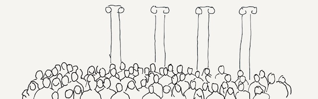

Back to table of contents

Our diverse students learn and play together.
Informatics students
Andrew J. Ko, Ph.D.
Informatics students are incredibly diverse.
They come from all over the world, have different perspectives and values, and have different short term and long term goals.
Some are very career driven, some are very curious; some are grateful for their opportunity to be at UW, some are more entitled.
We have international students from across the world (though mostly Asia), we have students from around the United States (though mostly west coast), and we have a small majority of students from around Washington state (though more western Washington than eastern).
The university also attracts a large proportion of students who are the first in their families to attend college.
There are some generalizations I can make about our students because we try to admit students with particular goals and interests:
- They're fascinated by information technology.
- They're curious about the human, social, and ethical dimensions of technology (but not as curious as students in arts and the humanities).
- Many pursue Informatics because of the economic security it promises, not because of an intrinsic interest they have in designing or building information technology. (Though those interests develop as we teach them.)
- They are often very busy, with too many classes, too much part time work, too much commuting to campus, and too many side projects. They juggle a lot, and often are still learning how to juggle well.
- Most are very driven students. They want to learn, they want to have impact, and they want to create. This leads to high expectations of our teaching.
- Most have a utopian view of technology, rather than a dystopian one. This is shifting as society's view of computing is becoming more nuanced, but our faculty are far more skeptical of information technology than our students.
- Informatics students support each other. It's a very tight learning community, and they rely on each other to learn, to navigate their experiences, and to get information.
In some ways, there are similarities between Informatics students and Computer Science students.
Students in both majors tend to pursue jobs in the software industry, for example.
However, Informatics students tend to seek a more holistic view of computing, and are also curious about non-computational aspects of information, such as ethics, policy, human experience, human values, and society.
Informatics students, due to their broader training, also pursue a broader set of careers beyond software engineering, filling roles across information technology companies.
While there are some consistencies in our students' interest, there is considerable diversity in the resources they have to attend to learning, and often this is out of their control.
Here are some of the many factors I've encountered while teaching at UW:
-
Some students don't have good sleep hygiene, and therefore don't sleep enough to stay awake in class.
Let them sleep; they're not going to learn anything if they're barely conscious.
And don't set deadlines at midnight; that just incentivizes poor sleep hygiene.
-
Some students live further away from campus every year and struggle to commute to campus reliability.
Be tolerant of some variation in arrival times.
Because you're likely paid more than them, they likely commute much further than you do, and may experience greater uncertainty in their trips.
-
As the cost of education at increases, some students are having to work more, sometimes full-time, to pay for their education.
This might mean they can't attend class or do homework.
Remember that failure to do assigned work is not necessarily laziness, but more likely a carefully made choice about triaging time.
Consider more flexible policies that support this triage.
-
Some students experience significant hardship in school: poverty, hunger, sexual assault, deaths in the family, divorce, childcare obligations.
School doesn't shield against these things; and at UW, where we admit a high proportion of first generation college students, many of these are common experiences.
It's hard to focus on learning when there are bigger events in life.
If you notice a student not submitting work, reach out to them and offer them campus resources; it's more likely something difficult is happening in their life than that they are lazy.
-
Some students have mental health issues that make it challenging to focus on learning.
Our university provides some resources for students, but they're far from adequate and many students do not utilize them.
If a student seems to disappear from a course, sometimes mental health is the reason.
Check in with them and see if they need help.
-
Some of our students are not U.S. citizens and face a whole collection of anxieties, barriers, and sometimes threats.
For example, even basic policies, such as international students inability to secure sufficient student work visas to land summer internships, result in inequities that put a greater stress on their career planning.
-
Some of our students do not start at UW, but transfer from 2-year colleges from around the state, and sometimes other universities.
While this is a widely pursued path, especially through the state's Running Start program, many transfer students can take several quarters to adjust.
Never assume that students know how university policies work, how to access learning technologies, or how to engage university services.
-
Students come from all over the world, and so their prior knowledge from primary, secondary, and other education varies widely.
University admissions has same basic minimum standards with respect to reading, writing, and math, but the assessments are not perfect.
You may find yourself teaching students who still struggle to write coherent sentences and paragraphs, or reason algebraicly.
-
Some students have physical disabilities, such as blindness, deafness, low-vision, and other physical impairments that limit their ability to perceive or access the materials that teachers create.
Use the many tools provided on campus to test the accessibility of your materials.
-
Some students have invisible disabilities, including learning disabilities, attentional disorders, and chronic mental health problems, that limit their ability to read, sit for long periods of time without moving, or sustain motivation to learn.
And because of stigma, many students do not disclose these.
If you notice a student struggling, have a conversation about how you can help.
-
Some students are not fluent enough in English to be able to use proper spelling or grammar.
If you assess spelling and grammar, recognize that while this might result in learning, it also disadvantages students who haven't had nearly as much time to master English.
-
Some students overcommit, because they haven't yet mastered tracking their commitments or managing their time.
-
Some students don't have a consistent, quiet, stable environment for studying.
They may live with a large family, have many child-care responsibilities, or have an unstable home life.
-
Some students, whether because of poverty or fasting for Ramadan, do not eat enough to remain alert in class, making it hard to focus on learning.
-
Some students don't have the money to have a computer or printer at home, or can't afford printing at school.
We try to offer enough rentals in iSchool IT, but students often do not know they can borrow them.
While all of this complexity in student experience can be overwhelming, I find it easiest to simply remember that students' lives are as complex as ours.
That doesn't mean you have to coddle them, but it does mean you have to make some tough choices about what assumptions you want to make about what's feasible and humane for them to do in your class.
To be inclusive, make as few assumptions as possible.
Next chapter: The curriculum